Harry Chen - Nov. 23, 2020
My artwork is a series of renderings of the same digital model of a pair of eyes placed on a plane. When creating this artwork, I connect the school assignment with my interest, computer programming and computer-generated imagery. I wanted to try something I haven’t tried before, that is, scalar field triangulation and Monte-Carlo path tracing. I modeled the eyelash like water droplets and made the eyes from glass because I have always been fascinated with water and glass-like solids. I experimented with different viewport settings, surfaces, and lightings to create images that bring people different feelings. I also tried direct light sampling and subsurface scattering to challenge myself.
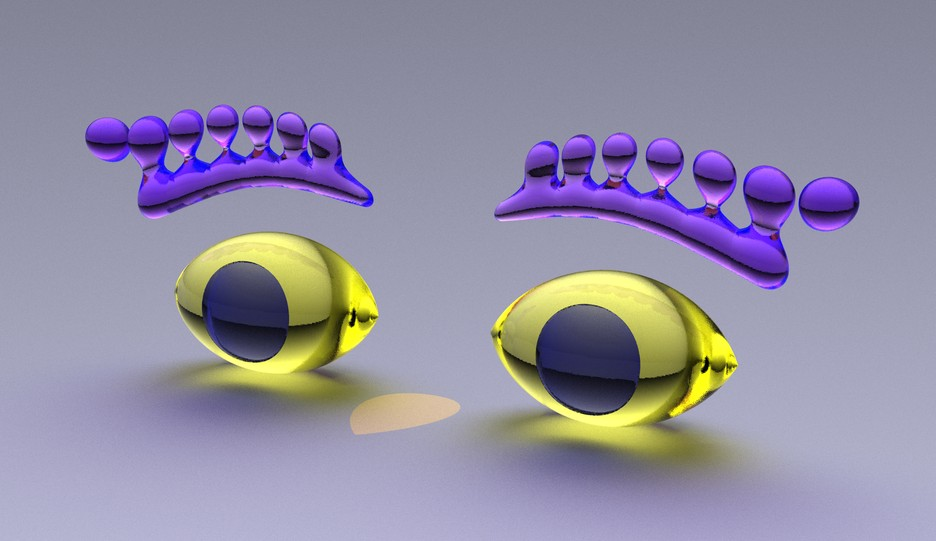
“In Your Eyes.” One of the series of renderings.
My artwork is a series of Computer Generated Imagery (CGI) of a stylized eye model. It is a series of images of the same model rendered using Monte-Carlo path tracing. The model is a polygonised procedural scalar field reconstructed using the Matching Cube algorithm. When creating this artwork, I didn’t use any third-party CGI software or libraries. Instead, I created it completely within the Microsoft Visual Studio IDE.
When I started working on the eye drawing project, I tried several sketches and digital drawings but they didn't look well. I am a computer graphics enthusiast who enjoys doing art by coding, so I decided to try doing this project using CGI. Initially I didn’t have much hope that it would work, because I had never tried scalar field polygonising and Monte-Carlo path tracing. I regarded it as an opportunity to try something new, and thought about the possibility that I would hand in a drawing instead if it wouldn’t work out well. However, my first full-resolution rendering surprised me. I then tried different angles and surfaces, and experimented with some more “advanced” concepts like direct light sampling, motion blur, and subsurface scattering, and was again surprised to find a simple eye model can have so many possibilities that brings a viewer different feelings when rendered differently.
I have been fascinated with water, light caustics, and glass-like solids, so I decided to create the eyes made of glass. When modeling the eye, I made it not too complicated or detailed but better described as stylized. I made the eyelash look like spilled water droplets, and in most images the eyes are rendered as glass. I tried different angles and perspectives as well as materials and lightings in the rendering. To find some challenge, I also experimented with diffuse reflection and subsurface scattering. Overall, I had fun doing this project and feel I learned a lot in the process.
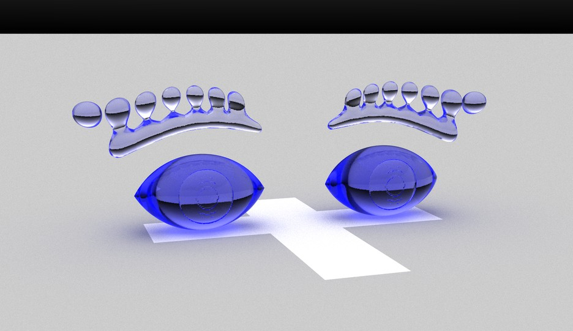
First full-resolution rendering
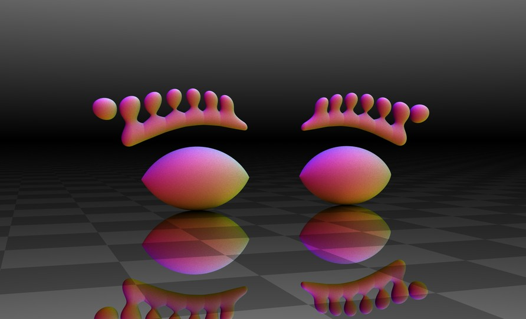
Second rendering. In the image, the ground is specular and the eyes are diffuse. I like
how the darkest part of the background is directly behind the eyes makes the scene look 3d.
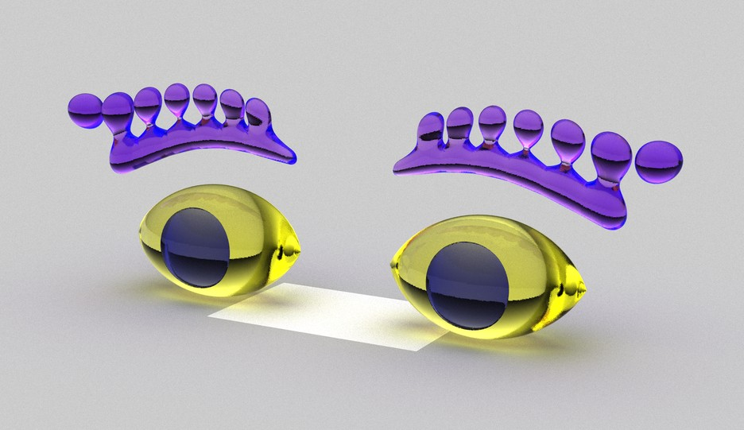
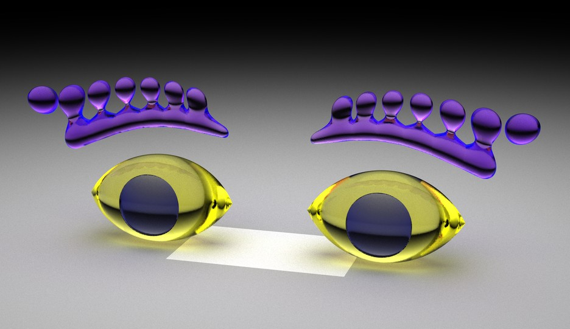
I didn’t pay much attention when creating this pair of eyes; I just tried to color
different parts of the eyes from my imagination and they worked out well (personally think). The
background doesn’t look pretty nice and I attempted to fix it in later renderings.
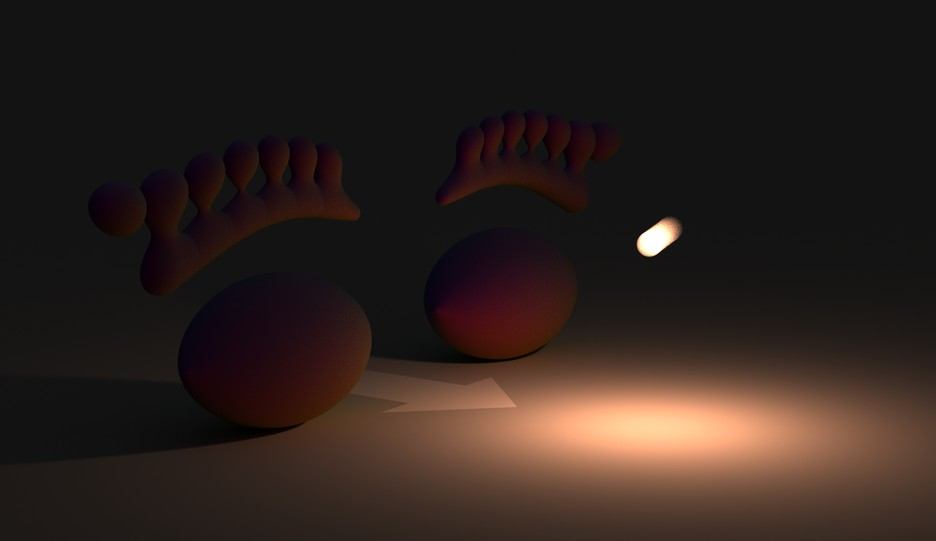
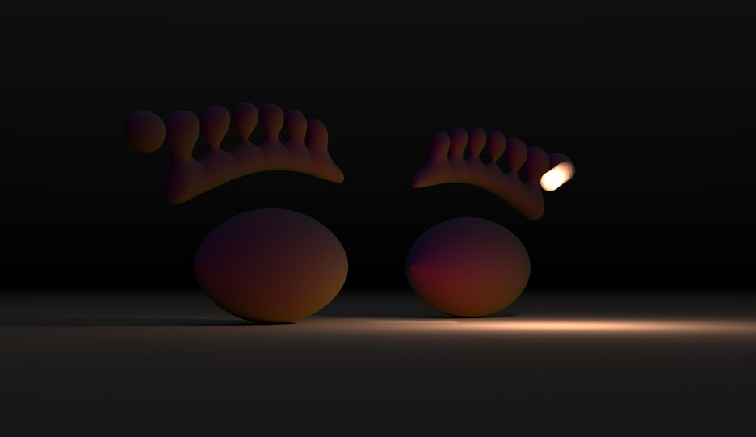
I experimented with direct light sampling and motion blur in this scene. There is
background light in this scene, but the dominant light source is a small moving sphere with high
brightness, which requires direct light sampling to be rendered efficiently. I set up this scene to see
how the diffuse surfaces are illuminated and the natural soft shadow. I make the color of the light
slightly warm to make the scene give people a warm feeling.
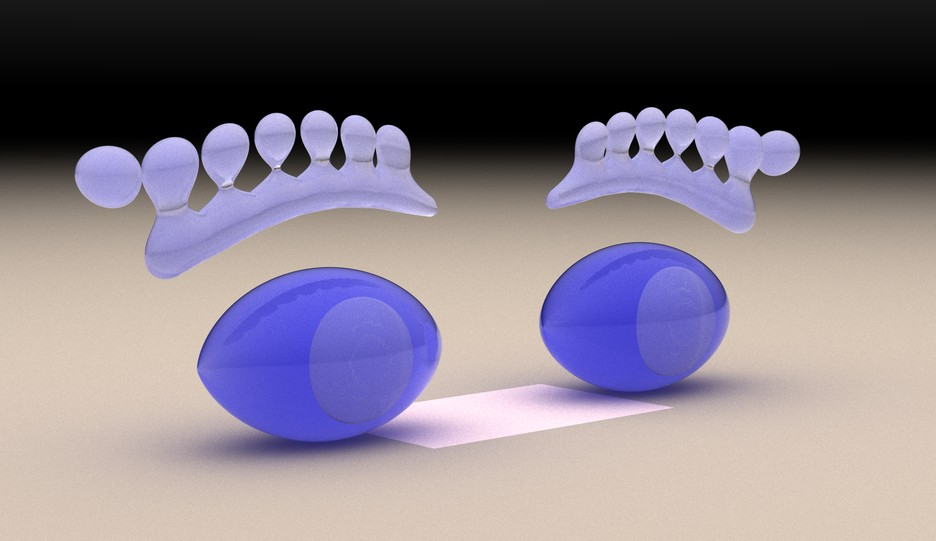
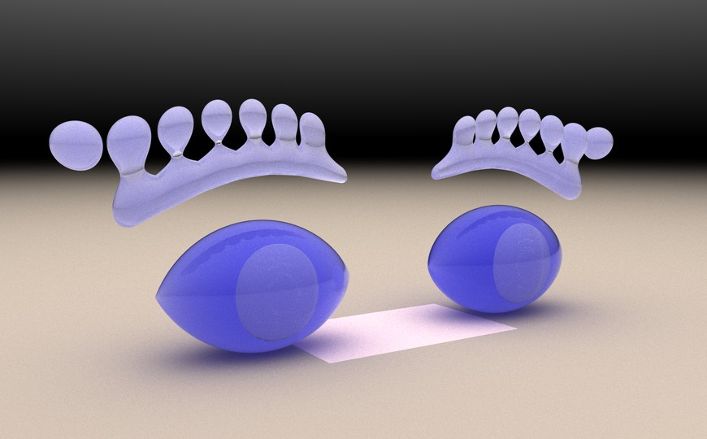
Experiment with subsurface scattering. The iris is actually a thin hollow layer inside
the eyeball, it appears to be white when subsurface scattering is added. In the first picture, the
background appears to be too dark. In the second picture I increased the perspective trying to fix it
naturally. However, it slightly distorted the eyes.
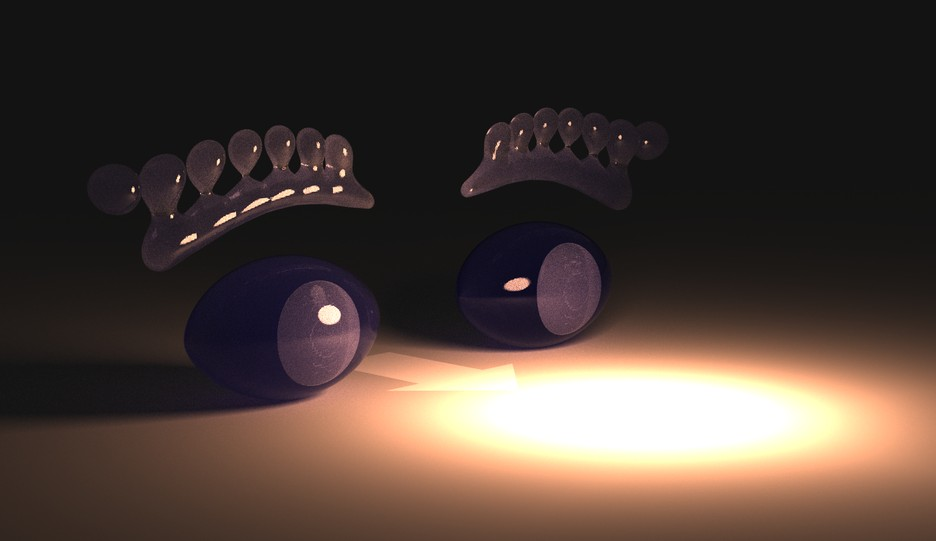
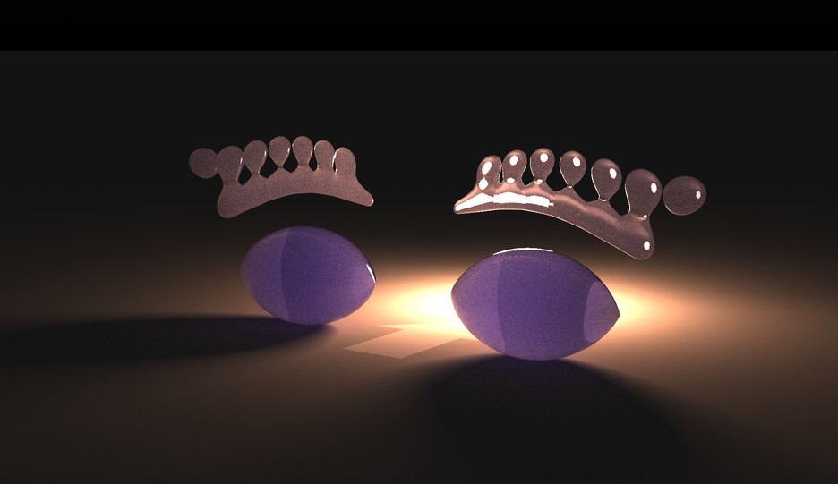
Combining subsurface scattering with bulb light. There is an emissive sphere with high
intensity in front of the eye, and I hid it from the first light bounce. Since the scene is dominated by
indirect light, direct light sampling doesn’t work well; I need much more ray samples (1024spp) and each
image takes around 20mins to render. I think bidirectional path tracing can solve this problem.
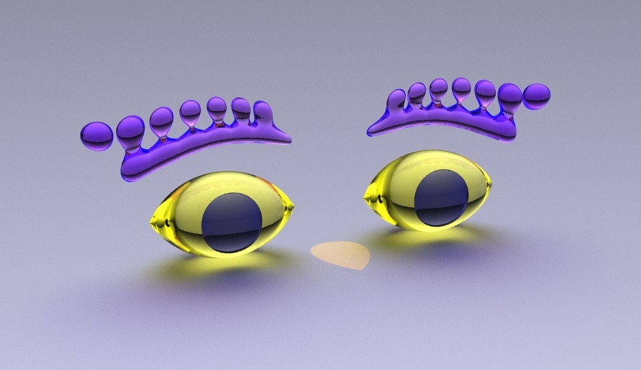
Rerender the colored eyes on a glossy and slightly tinted surface; try to fix the
background issue
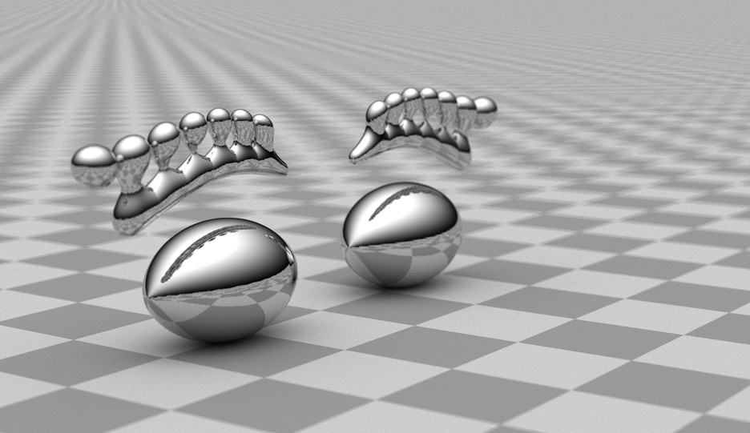
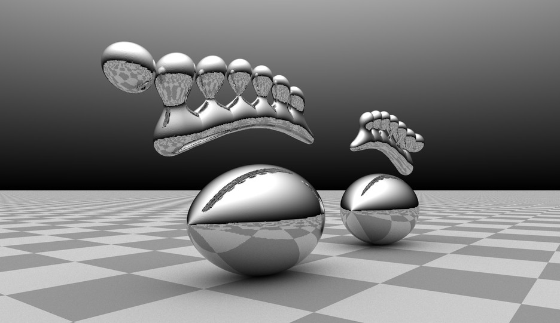
Grayscale rendering of eyes that looks like stainless steel; The first rendering contains
depth of field effect although I don’t think I implemented it correctly
The source code, polygonized model, and full-resolution renderings can be found here.